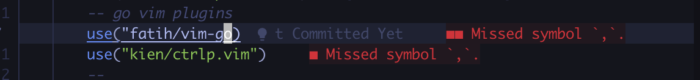

介绍我从 Goland 转到 Neovim的原因以及相关的配置过程。
为什么要转到 Neovim
我目前实习的公司是没有统一购买 Goland 的 license，如果想要使用 Goland 就要自购买或者破解。公司的同学给了我两个选择
- 自己购买 Goland
- 使用 VS code
对于目前的我来说，购买 Goland 是不太可能的。使用了一段时间的 VS code ，用起来也不错，但还是差点。在 VScode 中装了许多插件，可以与 Goland 使用体验基本一致了。但是，既然都是装插件，为啥不再试试其他的编辑器呢？人生苦短，我选 vim [doge].
在 Goland 的中用到的功能
- 代码高亮、补全、错误检查、格式化
- 跳转到定义
- 查找引用
- 全局查找某些内容
- 项目查找文件
- 批量重命名
- 块选取
- 显示 当前行时被谁更改的
- 复制当前行的信息 类似 project/xxx/xx/xxx.go:143
- 括号补全
- 同一个文件左右分屏
- 打开的文件是新的窗口
我的配置过程
安装 Neovim
Mac
1brew install neovim
安装依赖的字体
在终端中，默认的字体是不支持显示图标的，
Mac
1brew tap homebrew/cask-fonts && brew install --cask font-fira-code-nerd-font
Iterm2 里配置非 acsii 字体 Preferences -> Profiles -> Text -> Non-Ascii-Font 选择 fira-code-nerd-font ，之后重启 Iterm2 生效
配置目录
由于会安装很多插件、配置快捷键、UI、高亮等。会涉及到很多内容，如果把所有配置文件写一个文件中， 很乱，不方便管理。我的配置目录如下
1├── init.lua
2├── lua
3│ ├── basic.lua
4│ ├── colorscheme.lua
5│ ├── keybindings.lua
6│ ├── localconf.lua
7│ ├── lsp
8│ │ ├── cmp.lua
9│ │ ├── config
10│ │ │ └── lua.lua
11│ │ ├── setup.lua
12│ │ └── ui.lua
13│ ├── plugin-config
14│ │ ...
15│ ├── plugins.lua
16│ └── utils
17└── plugin
18 └── packer_compiled.lua
init.lua 是整个配置的入口文件，负责引用所有其他的模块，基本上想要打开或关闭某个插件只要在这里修改一行代码即可。
-
basic.lua： 基础配置，是对默认配置的一个重置。例如显示行号，Tab 的长度等
-
colorscheme.lua： 我们安装的主题皮肤配置，在这里切换主题。
-
keybindings.lua： 快捷键的设置，所有插件的快捷键也都会放在这里。
-
plugins.lua： 插件安装管理，插件安装或卸载全在这里设置。
-
lsp 文件夹： 是对 Neovim 内置 LSP 功能的配置，包括常见编程语言与语法提示等。
- config ： 文件夹包含各种语言服务器单独的配置文件。上面就有一个 lua.lua 的文件，就是 lua 的 lsp 配置
- setup.lua ： 内置 LSP 的配置。
- cmp.lua ： 语法自动补全补全的配置，包括各种补全源，与自定义代码段。
- ui.lua： 对内置 LSP 功能增强和 UI 美化。
- formatter.lua： 独立代码格式化功能（TODO）。
-
plugin-config 文件夹： 是对第三方插件的配置，未来每添加一个插件，这里就多一个配置文件。
-
utils 文件夹： 是对常见问题的修改，包括输入法切换，针对 windows 的特殊配置等。
配置入口文件
Neovim的配置入口文件并不是像vim一样放在用户目录的.vimrc中的，而是在~/.config/nvim/init.lua或init.vim，不过现在推荐使用lua进行编写 这个配置文件的说明在neovim.io中可以看到。
基础配置文件
在 ~/.config/nvim/lua/basic.lua 中配置一些基本的配置，会对 Neovim 的默认行为做一些重置。
作用域
首先对配置的作用域做一下声明，可以对多个作用域进行单独的配置，比如希望一个配置在全局生效，还是说只在窗口中生效等等
-
vim.o：普通作用域（common） -
vim.g: 全局作用域 -
vim.b：缓冲区作用域（buffer） -
vim.w：窗口作用域（window） -
vim.bo：buffer-local配置项 -
vim.wo：window-local配置项
只需要在vim.x. 后面跟上要修改的配置名并赋值即可。（x是作用域）
例如 vim.g.encoding = "UTF-8" 表示：全局的编码方式为UTF-8
配置如下
1-- utf8
2vim.g.encoding = "UTF-8"
3vim.o.fileencoding = "utf-8"
4-- jkhl 移动时光标周围保留8行
5vim.o.scrolloff = 8
6vim.o.sidescrolloff = 8
7-- 使用相对行号
8vim.wo.number = true
9vim.wo.relativenumber = true
10-- 高亮所在行
11vim.wo.cursorline = true
12-- 显示左侧图标指示列
13vim.wo.signcolumn = "yes"
14-- 右侧参考线，超过表示代码太长了，考虑换行
15vim.wo.colorcolumn = "80"
16-- 缩进4个空格等于一个Tab
17vim.o.tabstop = 4
18vim.o.shiftwidth = 4
19-- >> << 时移动长度
20vim.o.shiftwidth = 4
21vim.bo.shiftwidth = 4
22-- 新行对齐当前行
23vim.o.autoindent = true
24vim.bo.autoindent = true
25vim.o.smartindent = true
26-- 搜索大小写不敏感，除非包含大写
27vim.o.ignorecase = true
28vim.o.smartcase = true
29-- 搜索不要高亮
30vim.o.hlsearch = false
31-- 边输入边搜索
32vim.o.incsearch = true
33-- 命令行高为2，提供足够的显示空间
34vim.o.cmdheight = 1
35-- 当文件被外部程序修改时，自动加载
36vim.o.autoread = true
37vim.bo.autoread = true
38-- 禁止折行
39vim.wo.wrap = false
40-- 光标在行首尾时<Left><Right>可以跳到下一行
41vim.o.whichwrap = "<,>,[,]"
42-- 允许隐藏被修改过的buffer
43vim.o.hidden = true
44-- 鼠标支持
45vim.o.mouse = "a"
46-- 禁止创建备份文件
47vim.o.backup = false
48vim.o.writebackup = false
49vim.o.swapfile = false
50-- smaller updatetime
51vim.o.updatetime = 300
52-- 设置 timeoutlen 为等待键盘快捷键连击时间500毫秒，可根据需要设置
53-- 遇到问题详见：https://github.com/nshen/learn-neovim-lua/issues/1
54vim.o.timeoutlen = 500
55-- split window 从下边和右边出现
56vim.o.splitbelow = true
57vim.o.splitright = true
58-- 自动补全不自动选中
59vim.g.completeopt = "menu,menuone,noselect,noinsert"
60-- 样式
61vim.o.termguicolors = true
62vim.opt.termguicolors = true
63-- 补全增强
64vim.o.wildmenu = true
65-- Dont' pass messages to |ins-completin menu|
66vim.o.shortmess = vim.o.shortmess .. "c"
67-- 补全最多显示10行
68vim.o.pumheight = 10
69-- 永远显示 tabline
70vim.o.showtabline = 2
71-- 使用增强状态栏插件后不再需要 vim 的模式提示
72vim.o.showmode = false
73-- 配置剪切板
74vim.opt.clipboard = "unnamedplus"
怎么知道每个配置项应该放在哪个作用域呢？比如cursorline这个配置项为啥是放在wo中呢？ 可以在命令模式下输入:help cursorline查看相关文档。
显示相对行号这个配置我觉得很有必要，比如我希望删除上方的这个PlaneOptions interface，那么在开启了相对行号的前提下，我可以很方便的直接输入d6k，而不需要思考应该删除几行，花时间去数它。
最后一定要在 init.lua 中写入
1require("basic")
快捷键配置
在 Neovim 中配置快捷键其实是快捷键的快捷键 ，我们配置快捷键只是嫌默认的快捷键不太方便而已。我们要用自己的方式让 Neovim 适应我们，而不是我们去适应 Neovim。
分屏操作
如果不设置快捷键，那么在 vim 中要进行上下分屏需要在 normal 模式中输入:split ,进行左右:vsplit 。 我把分屏的操作都设置为以s 开头，那么
-
上下分屏
sh -
左右分屏
sv -
关闭当前窗口
sc -
关闭其他窗口
so
切换窗口
- Alt + h/j/k/l
快捷键设置方法
在 Neovim 中使用以下方法设置快捷键：
-
vim.api.nvim_set_keymap()全局快捷键 -
vim.api.nvim_buf_set_keymap()Buffer 快捷键
一般情况下，都是定义使用全局快捷键， Buffer 快捷键一般是在某些异步回调函数里指定，例如某插件初始化结束后，会有回调函数提供 Buffer，这个时候我们可以只针对这一个 Buffer 设置快捷键。
1vim.api.nvim_set_keymap('模式', '按键', '映射为', 'options')
这里 模式 参数用一个字母表示，常见的有：
-
n Normal 模式
-
i Insert 模式
-
v Visual 模式
-
t Terminal 模式
-
c Command 模式
这里的模式，在之后有介绍。
按键 就是你按下的键。
映射为 可以是多个按键组合，比如 5j 就是连续点击5和j， 也可以是一条命令比如 :q<CR>，表示退出。
options 大部分会设置为 { noremap = true, silent = true }。
-
noremap表示不会重新映射，比如你有一个映射A->B, 还有一个B->C，这个时候如果你设置noremap = false的话，表示会重新映射，那么A就会被映射为C。 -
silent为true，表示不会输出多余的信息。
Leader key
leader key 是你常用的前缀。
1vim.g.mapleader = " "
2vim.g.maplocalleader = " "
后边定义快捷键看到 <leader> 就表示 空格 。
由于要设置很多快捷键，所以先保存本地变量。
1local map = vim.api.nvim_set_keymap
2-- 复用 opt 参数
3local opt = {noremap = true, silent = true }
之后就可以这样映射按键了 map('模式', '按键', '映射为', 'options') 。
原来默认的 s 键是 删除光标所在处的字符然后插入需要录入的文本 ，由于我们用分屏占用了，需要把默认的 s 键取消设置。
1-- 取消 s 默认功能
2map("n", "s", "", opt)
3-- windows 分屏快捷键
4map("n", "sv", ":vsp<CR>", opt)
5map("n", "sh", ":sp<CR>", opt)
6-- 关闭当前
7map("n", "sc", "<C-w>c", opt)
8-- 关闭其他
9map("n", "so", "<C-w>o", opt)
10-- leader + hjkl 窗口之间跳转
11map("n", "<leader>h", "<C-w>h", opt)
12map("n", "<leader>j", "<C-w>j", opt)
13map("n", "<leader>k", "<C-w>k", opt)
14map("n", "<leader>l", "<C-w>l", opt)
水平分屏很常用，在开发中会有跳转到定义 gd 快捷键(Go Definition )，这个可以和 sv 组合起来，形成 svgd 命令，相当于打开右侧窗口进入方法的定义。看完可以随手 sc 关闭掉，非常方便。
调整窗口比例快捷键。
1-- 左右比例控制
2map("n", "<C-Left>", ":vertical resize -2<CR>", opt)
3map("n", "<C-Right>", ":vertical resize +2<CR>", opt)
4map("n", "s,", ":vertical resize -20<CR>", opt)
5map("n", "s.", ":vertical resize +20<CR>", opt)
6-- 上下比例
7map("n", "sj", ":resize +10<CR>", opt)
8map("n", "sk", ":resize -10<CR>", opt)
9map("n", "<C-Down>", ":resize +2<CR>", opt)
10map("n", "<C-Up>", ":resize -2<CR>", opt)
11-- 等比例
12map("n", "s=", "<C-w>=", opt)
Neovim 内置的命令行要用<C-\><C-N> 退出，我们把它映射为 ESC ，并用 leader + t 在下边窗口打开，或 leader + vt 侧边窗口打开。在里面 i 进入 insert 模式
1-- Terminal相关
2map("n", "<leader>t", ":sp | terminal<CR>", opt)
3map("n", "<leader>vt", ":vsp | terminal<CR>", opt)
4map("t", "<Esc>", "<C-\\><C-n>", opt)
在 visual 模式下可以J K 上下移动代码，又增加了连续 > 或 < 缩进代码。
1-- visual模式下缩进代码
2map("v", "<", "<gv", opt)
3map("v", ">", ">gv", opt)
4-- 上下移动选中文本
5map("v", "J", ":move '>+1<CR>gv-gv", opt)
6map("v", "K", ":move '<-2<CR>gv-gv", opt)
在浏览非常长的代码文件时，通常要用 Ctrl+u / Ctrl + d 来滚动代码，u 和 p 表示 up翻页 和 down翻页。
但是ctrl + u / ctrl + d 默认移动半屏，翻太快，一不留神就不知道翻到哪了， j / k 又移动得太慢了。这时我会设置两种不同级别的翻页距离， Ctrl+j / Ctrl+k 移动 4 行，Ctrl+u / Ctrl + d 移动 9 行
1-- 上下滚动浏览
2map("n", "<C-j>", "4j", opt)
3map("n", "<C-k>", "4k", opt)
4-- ctrl u / ctrl + d 只移动9行，默认移动半屏
5map("n", "<C-u>", "9k", opt)
6map("n", "<C-d>", "9j", opt)
最后，在 init.lua 入口文件里引入 lua/keybindings.lua，注意不要写 .lua
1-- 快捷键映射
2require("keybindings")
插件管理
之前使用的是vim-plug，用 lua 管理之后就转到packer 了。
安装
mac
1git clone --depth 1 https://github.com/wbthomason/packer.nvim\
2 ~/.local/share/nvim/site/pack/packer/start/packer.nvim
新建插件的配置文件并初始化。
1local packer = require("packer")
2packer.startup(
3 function(use)
4 -- Packer 可以管理自己本身
5 use ("wbthomason/packer.nvim")
6 -- 你的插件列表...
7end)
使用 use ("name/repo") 来安装插件，name/repo 对应github 的ID 和仓库名。例如上边代码中的 use ("wbthomason/packer.nvim")，对应的就是 https://github.com/wbthomason/packer.nvim 地址。
在第二个参数中还可设置 config 参数。例如设置最大工作的并发等。
1local packer = require("packer")
2packer.startup({
3 function(use)
4 -- Packer 可以管理自己本身
5 use 'wbthomason/packer.nvim'
6 -- 你的插件列表...
7 end,
8 config = {
9 -- 并发数限制
10 max_jobs = 16,
11 -- 浮动窗口打开安装列表
12 display = {
13 open_fn = function()
14 return require("packer.util").float({ border = "single" })
15 end,
16 },
17 },
18})
必须在 入口文件 中引入才可以， 打开 init.lua 增加如下代码：
1-- Packer 插件管理
2require("plugins")
再次 :wq 后，配置生效。
配置生效后，运行 :PackerSync, 重新生成编译的加载文件。每次修改完 lua/plugins.lua 这个文件后，保存退出，重新打开并调用 :PackerSync 就可以了，只要你的网络可以连接到 github，插件就会安装成功。
Neovim 推荐将数据存储在 标准数据目录下（:h base-directories 查看详细文档），标准数据目录默认是 ~/.local/share/nvim/ ，你可以通过调用 :echo stdpath("data") 命令查看你系统下的实际路径。
Packer 会将插件默认安装在 标准数据目录/site/pack/packer/start 中，完整目录也就是~/.local/share/nvim/site/pack/packer/start 目录下。
你现在可以进入这个目录，查看一下安装的插件，应该看到只安装了 packer.nvim 一个插件，后续安装的插件也都会出现在这个目录中。
之前我们讲了安装组件的流程为： 修改 lua/plugins.lua 文件，保存退出，重新打开并调用 :PackerSync。
其实如果你愿意的话，我们可以添加一条自动命令让每次保存 lua/plugins.lua 就自动安装组件。
打开 lua/plugins.lua 文件，在最后添加：
1-- 每次保存 plugins.lua 自动安装插件
2pcall(
3 vim.cmd,
4 [[
5 augroup packer_user_config
6 autocmd!
7 autocmd BufWritePost plugins.lua source <afile> | PackerSync
8 augroup end
9 ]]
10)
这里的 [[ ... ]] 中间的部分是 VIM 脚本，因为 Neovim 还没有实现自动命令的 API，所以我们需要使用 vim.cmd 命令来执行这段脚本。
这段脚本的意思是 BufWritePost 事件时，如果改的是 lua/plugins.lua 文件，就自动重新加载并调用 :PackerSync 命令，这样就不用手动重启，可以自动安装插件了。
pcall 命令是一个 Lua 函数，它的作用是检查一个函数是否执行成功，如果执行成功，则返回 true，否则返回 false 。
现在修改 lua/plugins.lua 后输入 :w 就会自动安装和更新插件了。
主题
Neovim 本身内置了一些主题配色，可以通过 :colorscheme Tab键 命令来查看， 回车确认选中。这里列出的都是内置的 colorscheme，它们都保存在 $VIMRUNTIME/colors/ 目录下。可以在 Neovim 中输入命令 :echo $VIMRUNTIME 来查看 $VIMRUNTIME 具体的路径。
但通过这种方式选择的主题，在重启后就失效了。需要写入配置才可以保存，下边看一下如何写入配置。
在init.lua 中添加
1require("colorscheme")
新建被引入的 lua/colorscheme.lua 文件，代码如下：
1local colorscheme = "tokyonight"
2local status_ok, _ = pcall(vim.cmd, "colorscheme " .. colorscheme)
3if not status_ok then
4 vim.notify("colorscheme " .. colorscheme .. " 没有找到！")
5 return
6end
简单解释一下，上边代码第一行，定义了一个 colorscheme 的变量，表示我们要设置的主题，注意其实这里我们使用的 tokyonight 并不存在。
接下来的部分代码，我们又见到了 pcall。
1local status_ok, _ = pcall(vim.cmd, "colorscheme " .. colorscheme)
pcall 在 Lua 中用于捕获错误，这句话如果不用pcall 的话，相当于：
1vim.cmd('colorscheme '.. colorscheme)
Lua 语言中用 .. 来连接两个字符串，上边已经声明了 colorscheme 变量也是一个字符串 "tokyonight" 所以这里其实就等于调用 :colorscheme tokyonight 命令。 但如果这样直接调用命令，如果主题不存在，Neovim 就会直接崩溃报错找不到该主题，程序中也就没法知道主题是否设置成功了。
使用 pcall 的话就不同了，pcall 函数的返回的第一个参数是 boolean 类型表示状态，这句话的意思是，如果 colorscheme 执行成功，则返回 true，否则返回 false。
如果没有设置成功，我们就让它输出信息：
1vim.notify("colorscheme " .. colorscheme .. " 没有找到！")
至此配置的部分就完成了，提示没有找到是因为 tokyonight 主题并不存在，如果把该值修改成已经存在的主题，比如 ron 就会设置成功了。
下边我们看看如何安装第三方主题。
安装第三方插件
打开 lua/plugins.lua 文件，增加 colorschemes 部分：
1packer.startup({
2 function(use)-- Packer 可以升级自己
3 use("wbthomason/packer.nvim")
4 --------------------- colorschemes ---------------------- tokyonight
5 use("folke/tokyonight.nvim")
6})
:w 保存，如果顺利的话，会自动安装，完成后按 q 退出，重启后就可以看到 tokyonight 主题的样子了。
通常我们都会选择专门为 Neovim 制作的第三方主题，因为它们大多都会支持基于 TreeSitter 的语法高亮（后续代码高亮章节会详细说明），我认为这是考量是否应该选择一个主题最基础也是重要的事。
也就是说，一个现代化的主题，必须支持 nvim-treesitter 语法高亮。
nvim-treesitter 的官方 wiki 上列出了许多支持 Treesitter 的主题，如果你想寻找更多的主题配色，可以到 nvim-treesitter wiki 页里查看。
选择喜欢的样式后修改 lua/colorscheme.lua 内 colorscheme 变量的名字保存，重启后即可生效。
1local colorscheme = "tokyonight"
侧边栏管理
一般 IDE 都有一个文件浏览器，可以方便地浏览目录结构，添加、删除、移动或者重命名文件，更快地打开文件。
安装插件
1use {
2 'kyazdani42/nvim-tree.lua',
3 requires = {
4 'kyazdani42/nvim-web-devicons', -- optional, for file icons
5 },
6 tag = 'nightly' -- optional, updated every week. (see issue #1193)
7}
配置
创建 lua/plugin-config/nvim-tree.lua 文件，添加如下内容：
1local status, nvim_tree = pcall(require, "nvim-tree")
2if not status then
3 vim.notify("没有找到 nvim-tree")
4 return
5end
上边的代码相当于：
1local nvim_tree = require("nvim-tree")
但是如果我们直接 require 一个插件，当这个插件不存在的时候，Neovim 就会崩溃，所以我这里使用 pcall 来捕获了错误，如果 nvim-tree 没有安装，我们就会直接 return，不再继续执行下边的配置。
由于我们经常会调整插件，所以应该尽量避免报错，后续的所有插件配置文件都会这么做。
继续增加代码：
1local status, nvim_tree = pcall(require, "nvim-tree")
2if not status then
3 vim.notify("没有找到 nvim-tree")
4 return
5end
6
7-- 列表操作快捷键
8local list_keys = require('keybindings').nvimTreeList
9nvim_tree.setup({
10
11 auto_reload_on_write = true,
12 create_in_closed_folder = false,
13 disable_netrw = false,
14 hijack_cursor = false,
15 hijack_netrw = true,
16 hijack_unnamed_buffer_when_opening = false,
17 ignore_buffer_on_setup = false,
18 open_on_setup = false,
19 open_on_setup_file = false,
20 open_on_tab = false,
21 sort_by = "name",
22 root_dirs = {},
23 prefer_startup_root = false,
24 sync_root_with_cwd = false,
25 reload_on_bufenter = false,
26 respect_buf_cwd = false,
27 view = {
28 adaptive_size = false,
29 centralize_selection = false,
30 width = 40,
31 height = 30,
32 hide_root_folder = false,
33 side = "left",
34 preserve_window_proportions = false,
35 number = false,
36 relativenumber = false,
37 signcolumn = "yes",
38 mappings = {
39 custom_only = false,
40 list = list_keys,
41 },
42 },
43 renderer = {
44 add_trailing = false,
45 group_empty = false,
46 highlight_git = false,
47 full_name = false,
48 highlight_opened_files = "none",
49 root_folder_modifier = ":~",
50 indent_markers = {
51 enable = false,
52 icons = {
53 corner = "└",
54 edge = "│",
55 item = "│",
56 none = " ",
57 },
58 },
59 icons = {
60 webdev_colors = true,
61 git_placement = "before",
62 padding = " ",
63 symlink_arrow = " ➛ ",
64 show = {
65 file = true,
66 folder = true,
67 folder_arrow = true,
68 git = true,
69 },
70 glyphs = {
71 default = "",
72 symlink = "",
73 bookmark = "",
74 folder = {
75 arrow_closed = "",
76 arrow_open = "",
77 default = "",
78 open = "",
79 empty = "",
80 empty_open = "",
81 symlink = "",
82 symlink_open = "",
83 },
84 git = {
85 unstaged = "✗",
86 staged = "✓",
87 unmerged = "",
88 renamed = "➜",
89 untracked = "★",
90 deleted = "",
91 ignored = "◌",
92 },
93 },
94 },
95 special_files = { "Cargo.toml", "Makefile", "README.md", "readme.md" },
96 symlink_destination = true,
97 },
98 hijack_directories = {
99 enable = true,
100 auto_open = true,
101},
102 update_focused_file = {
103 enable = false,
104 update_root = false,
105 ignore_list = {},
106 },
107 ignore_ft_on_setup = {},
108system_open = {
109 cmd = "open", -- mac
110 -- cmd = "wsl-open" --win
111 args = {},
112 },
113 diagnostics = {
114 enable = false,
115 show_on_dirs = false,
116 debounce_delay = 50,
117 icons = {
118 hint = "",
119 info = "",
120 warning = "",
121 error = "",
122 },
123 },
124 filters = {
125 -- 隐藏 node_modules
126 dotfiles = false,
127 custom = {"node_modules",".idea"},
128 exclude = {},
129 },
130 filesystem_watchers = {
131 enable = false,
132 interval = 100,
133 debounce_delay = 50,
134 },
135 git = {
136 enable = true,
137 ignore = true,
138 show_on_dirs = true,
139 timeout = 400,
140 },
141 actions = {
142 use_system_clipboard = true,
143 change_dir = {
144 enable = true,
145 global = false,
146 restrict_above_cwd = false,
147 },
148 expand_all = {
149 max_folder_discovery = 300,
150 exclude = {},
151 },
152 open_file = {
153 quit_on_open = true,
154 resize_window = true,
155 window_picker = {
156 enable = true,
157 chars = "ABCDEFGHIJKLMNOPQRSTUVWXYZ1234567890",
158 exclude = {
159 filetype = { "notify", "packer", "qf", "diff", "fugitive", "fugitiveblame" },
160 buftype = { "nofile", "terminal", "help" },
161 },
162 },
163 },
164 remove_file = {
165 close_window = true,
166 },
167 },
168 trash = {
169 cmd = "gio trash",
170 require_confirm = true,
171 },
172 live_filter = {
173 prefix = "[FILTER]: ",
174 always_show_folders = true,
175 },
176 log = {
177 enable = false,
178 truncate = false,
179 types = {
180 all = false,
181 config = false,
182 copy_paste = false,
183 dev = false,
184 diagnostics = false,
185 git = false,
186 profile = false,
187 watcher = false,
188 },
189 },
190})
191-- 自动关闭
192vim.cmd([[
193 autocmd BufEnter * ++nested if winnr('$') == 1 && bufname() == 'NvimTree_' . tabpagenr() | quit | endif
194]])
上边代码就是 nvim-tree 的配置，可以根据注释进行修改。这里简单解释一下，值得注意的是 system_open 项，如果想要在 WSL 中用 Windows 系统默认设置打开文件，需要使用 Node.js 全局安装一个 wsl-open 包，使用命令 npm install -g wsl-open，如果不需要这个功能，也可以不用安装。 如果不是 Windows 系统也就不需要安装。
nvim-tree 初始化支持很多参数，如果想知道还有哪些其他的参数，可以运行 :h nvim-tree.setup 调出帮助文档查看。
注意到上述代码第一行，引入了我们之前创建的 lua/keybindings.lua，并取出 nvimTreeList 变量作为快捷键设置， 那我们就看看 keybinding 中是如何导出这个变量的。
打开 lua/keybindings.lua 文件，增加如下代码：
1-- 插件快捷键
2local pluginKeys = {}
3
4-- nvim-tree begin --
5-- alt + m 键打开关闭tree
6map("n", "<A-m>", ":NvimTreeToggle<CR>", opt)
7-- 列表快捷键
8pluginKeys.nvimTreeList = {
9 -- 打开文件或文件夹
10 { key = {"<CR>", "o", "<2-LeftMouse>"}, action = "edit" },
11 -- 分屏打开文件
12 { key = "v", action = "vsplit" },
13 { key = "h", action = "split" },
14 -- 显示隐藏文件
15 { key = "i", action = "toggle_custom" }, -- 对应 filters 中的 custom (node_modules)
16 { key = ".", action = "toggle_dotfiles" }, -- Hide (dotfiles)
17 -- 文件操作
18 { key = "<F5>", action = "refresh" },
19 { key = "a", action = "create" },
20 { key = "d", action = "remove" },
21 { key = "D", action = "trash" },
22 { key = "r", action = "rename" },
23 { key = "x", action = "cut" },
24 { key = "c", action = "copy" },
25 { key = "p", action = "paste" },
26 { key = "s", action = "system_open" },
27}
28-- nvim-tree end --
29
30return pluginKeys
在上边代码中，我们首先在 Normal 模式下定义了一个Alt + m 的快捷键，调用 :NvimTreeToggle<CR> 命令，这个快捷键用来打开和关闭侧边栏。
pluginKeys.nvimTreeList 下则是在光标在列表中时的快捷键设置，比如用 o 来打开关闭文件夹，a 添加一个文件，d 删除文件等等。
代码的最后一行，我们 return 了一个 lua table， 也叫关联数组。 当我们从其他文件 require 这个文件的时候，就会得到这个对象。
最后不要忘记在入口文件 init.lua 中引入配置：
1-- 插件配置
2require("plugin-config.nvim-tree")
重启 nvim 后，侧边栏就会生效了，使用 Alt + m 打开/关闭， j/k 上下移动， <leader> + h / <leader> + l 可以左右窗口跳转。
标签页和底部信息栏
标签页
bufferline 顾名思义是把 Neovim 的 buffer 图形化显示成标签页的形式。
安装
1 use({ "akinsho/bufferline.nvim", tag = "v2.*",requires = { "kyazdani42/nvim-web-devicons", "moll/vim-bbye" }})
这里我增加了一个 vim-bbye 依赖，因为这个插件安装后会增加一个 :Bdelete 命令，相比内置的 :bdelete, 它删除 buffer 的同时，并不会搞乱布局 。 待会儿我们会配置 Bdelete 为关闭 Tab 的命令。
新建配置文件 lua/plugin-config/bufferline.lua，代码如下：
1local status, bufferline = pcall(require, "bufferline")
2if not status then
3 vim.notify("没有找到 bufferline")
4 return
5end-- bufferline 配置
6-- https://github.com/akinsho/bufferline.nvim#configuration
7bufferline.setup({
8 options = {
9 -- 关闭 Tab 的命令，这里使用 moll/vim-bbye 的 :Bdelete 命令
10 close_command = "Bdelete! %d",
11 right_mouse_command = "Bdelete! %d",
12 -- 侧边栏配置
13 -- 左侧让出 nvim-tree 的位置，显示文字 File Explorer
14 offsets = {
15 {
16 filetype = "NvimTree",
17 text = "File Explorer",
18 highlight = "Directory",
19 text_align = "left",
20 },
21 },
22 -- 使用 nvim 内置 LSP 后续课程会配置
23 diagnostics = "nvim_lsp",
24 -- 可选，显示 LSP 报错图标
25 ---@diagnostic disable-next-line: unused-local
26 diagnostics_indicator = function(count, level, diagnostics_dict, context)
27 local s = " "
28 for e, n in pairs(diagnostics_dict) do
29 local sym = e == "error" and " " or (e == "warning" and " " or "")
30 s = s .. n .. sym
31 end
32 return s
33 end,
34 },
35})
增加快捷键。 打开 lua/keybindings.lua，根据你的使用习惯增加键盘映射：
1-- bufferline
2-- 左右Tab切换
3map("n", "<C-h>", ":BufferLineCyclePrev<CR>", opt)
4map("n", "<C-l>", ":BufferLineCycleNext<CR>", opt)
5-- 关闭
6--"moll/vim-bbye"
7map("n", "<C-w>", ":Bdelete!<CR>", opt)
8map("n", "<leader>bl", ":BufferLineCloseRight<CR>", opt)
9map("n", "<leader>bh", ":BufferLineCloseLeft<CR>", opt)
10map("n", "<leader>bc", ":BufferLinePickClose<CR>", opt)
上述代码延续了我在 VSCode 中的使用习惯，使用 Ctrl + h 和 Ctrl + l 左右切换标签页， Ctrl + w 关闭当前标签页。
我又将 bufferline 提供的我不太常用到的命令，映射为由空格键开头， <leader>bl 关闭左侧标签页， <leader>bh 关闭右侧标签页， <leader>bc 选择要关闭的标签页。
最后一步，在入口文件中引入配置文件。 打开 init.lua，增加代码：
1require("plugin-config.bufferline")
保存退出，重启后安装生效。
底部信息栏
底部状态栏用于显示一些额外信息，比如当前的编辑模式，光标所在的行号，列号。当前文件大小，编码格式，当前 git 分支等状态。
打开 lua/plugins.lua， 增加 lualine 相关代码：
1 use({ "nvim-lualine/lualine.nvim", requires = { "kyazdani42/nvim-web-devicons" } })
2 use("arkav/lualine-lsp-progress")
注意这里新增了两行，第二行是 lualine 的一个扩展。
新建配置文件 lua/plugin-config/lualine.lua，代码如下：
1-- 如果找不到lualine 组件，就不继续执行
2local status, lualine = pcall(require, "lualine")
3if not status then
4 vim.notify("没有找到 lualine")
5 return
6end
7
8lualine.setup({
9 options = {
10 theme = "tokyonight",
11 component_separators = { left = "|", right = "|" },
12 -- https://github.com/ryanoasis/powerline-extra-symbols
13 section_separators = { left = " ", right = "" },
14 },
15 extensions = { "nvim-tree", "toggleterm" },
16 sections = {
17 lualine_c = {
18 "filename",
19 {
20 "lsp_progress",
21 spinner_symbols = { " ", " ", " ", " ", " ", " " },
22 },
23 },
24 lualine_x = {
25 "filesize",
26 {
27 "fileformat",
28 -- symbols = {
29 -- unix = '', -- e712
30 -- dos = '', -- e70f
31 -- mac = '', -- e711
32 -- },
33 symbols = {
34 unix = "LF",
35 dos = "CRLF",
36 mac = "CR",
37 },
38 },
39 "encoding",
40 "filetype",
41 },
42 },
43})
lualine 的配置参数主要有 options，extensions 和 sections 三块。
options 用于设置样式， 其中 theme 设置主题配色，可以设置为 auto， 也可以设置为主题列表中的一个， 我这里设置的是 tokyonight，是由 tokyonight 主题配色额外提供的支持。section_separators 设置分段分隔符， component_separators 设置分段中的组件分隔符。
extensions 用于设置 lualine 支持的扩展，详见扩展列表 这里我们只会用到 nvim-tree 和 toggleterm 。
sections 用于设置不同分段，所需显示的功能模块， 分段有 6 个，分别为： A B C X Y Z 。
1+-------------------------------------------------+
2| A | B | C X | Y | Z |
3+-------------------------------------------------+
对应默认配置项为：
1 sections = {
2 lualine_a = {'mode'},
3 lualine_b = {'branch', 'diff', 'diagnostics'},
4 lualine_c = {'filename'},
5 lualine_x = {'encoding', 'fileformat', 'filetype'},
6 lualine_y = {'progress'},
7 lualine_z = {'location'}
8 },
我的配置中，修改了 C 的部分：
1 lualine_c = {
2 "filename",
3 {
4 "lsp_progress",
5 spinner_symbols = { " ", " ", " ", " ", " ", " " },
6 },
7 },
在文件名后边增加了 lsp_progress 进度显示，该信息是由我们之前安装的 arkav/lualine-lsp-progress 提供的。
可以修改了 X 的部分， 因为 lualine 默认的 fileformat 是用图标表示的，不是很直观，可以换成了和 VSCode 一致的 LF/CRLF/CR 格式。
1 lualine_x = {
2 "filesize",
3 {
4 "fileformat",
5 -- symbols = {-- unix = '', -- e712-- dos = '', -- e70f-- mac = '', -- e711-- },
6 -- symbols = {unix = "LF",dos = "CRLF",mac = "CR",},
7 },
8 "encoding",
9 "filetype",
10 },
由于该插件并不需要定义快捷键，所以我们执行最后一步，在入口文件中引入配置文件。 打开 init.lua，增加代码：
1require("plugin-config.lualine")
:wq 保存退出，重启后安装生效。
搜索插件
使用 VSCode 的时候经常使用中内置的模糊查找 Ctrl + p 来查找文件，使用 Ctrl + shift + f 来全局查找，非常方便。
安装
1use { 'nvim-telescope/telescope.nvim', requires = { "nvim-lua/plenary.nvim" } }
安装完成后，需要调用 :checkhealth telescope 检查依赖情况，这里通常会提示 ripgrep 不存在，因为 telescope 依赖以下项目。
mac
1brew install ripgrep
2brew install fd
快捷键配置
1-- Telescope begin --
2-- 查找文件
3map("n", "<leader>ff", ":Telescope find_files<CR>", opt)
4-- 全局搜索
5map("n", "<leader>fg", ":Telescope live_grep<CR>", opt)
这里我定义了 <leader>ff 为 :Telescope find_files命令。 <leader>fg 为 :Telescope live_grep 全局查找。
默认情况下打开窗口就会进入输入模式，这个时候和在普通编辑器一样，可以按 ESC 键进入 Normal 模式，然后 j/k 在文件列表里上下浏览， 按 i 或 a 回到 Insert 模式，按 ESC 退出。
除了默认的快捷键以外，Telescope 还支持在打开的窗口中自定义快捷键，打开 lua/keybindings.lua 继续添加：
1-- Telescope 列表中 插入模式快捷键
2pluginKeys.telescopeList = {
3 i = {
4 -- 上下移动
5 ["<C-j>"] = "move_selection_next",
6 ["<C-k>"] = "move_selection_previous",
7 ["<Down>"] = "move_selection_next",
8 ["<Up>"] = "move_selection_previous",
9 -- 历史记录
10 ["<C-n>"] = "cycle_history_next",
11 ["<C-p>"] = "cycle_history_prev",
12 -- 关闭窗口
13 ["<C-c>"] = "close",
14 -- 预览窗口上下滚动
15 ["<C-u>"] = "preview_scrolling_up",
16 ["<C-d>"] = "preview_scrolling_down",
17 },
18}
19
20-- Telescope end --
这样在插入模式下按 Ctrl + j / Ctrl +k 就可以在文件列表中上下切换了，不再需要切回 Normal 模式了。
配置 telescope 插件
新建配置文件 lua/plugin-config/telescope.lua，代码如下
1local status, telescope = pcall(require, "telescope")
2if not status then
3 vim.notify("没有找到 telescope")
4 return
5end
6
7telescope.setup({
8 defaults = {
9 -- 打开弹窗后进入的初始模式，默认为 insert，也可以是 normal
10 initial_mode = "insert",
11 -- 窗口内快捷键
12 mappings = require("keybindings").telescopeList,
13 },
14 pickers = {
15 -- 内置 pickers 配置
16 find_files = {
17 -- 查找文件换皮肤，支持的参数有： dropdown, cursor, ivy
18 -- theme = "dropdown",
19 }
20 },
21 extensions = {
22 -- 扩展插件配置
23 },
24})
Telescope 非常强大，内置了很多的 pickers，比如 :Telescope buffers 命令可以列出打开的 buffers， :Telescope git_files 列出 git 文件，:Telescope man_pages 列出帮助等等。
打开 init.lua，增加代码：
1require("plugin-config.telescope")
:wq 保存退出，重启后安装生效。
除了内置的还可以安装第三方扩展
下边通过一个简单的扩展，演示如何安装扩展。
要安装的扩展叫做 telescope-env.nvim 用于列出系统环境变量.
打开 lua/plugins.lua 文件，新增 telescope-env.nvim 相关的内容：
1-- telescope extensions
2use "LinArcX/telescope-env.nvim"
:w 保存，自动安装，安装完成后，打开 lua/plugin-config/telescope.lua 文件，在文件最后新增：
1-- telescope extensions
2pcall(telescope.load_extension, "env")
重启后，就可以调用 :Telescope env 命令，打开环境变量列表了。
启动页面
当我们在命令行中输入 nvim 不带任何路径并敲击回车的时候，就会打开这个界面，通常我们会在这个界面中配置最常用功能，比如打开最近编辑过的文件，快速打开项目文件夹，快速修改快捷键等。
最重要的是，我们要自定一个酷酷的 Banner ，表示这是我们独一无二的版本， 首先需要安装 dashboard-nvim 插件。
安装
修改 lua/plugins.lua 文件中添加 glepnir/dashboard-nvim 插件：
1use("glepnir/dashboard-nvim")
创建配置文件 lua/plugin-config/dashboard.lua，添加如下内容：
1local status, db = pcall(require, "dashboard")
2if not status then
3 vim.notify("没有找到 dashboard")
4 return
5end
6
7db.custom_footer = {
8 "jimyag",
9}
10
11db.custom_center = {
12 {
13 icon = " ",
14 desc = "Projects ",
15 action = "Telescope projects",
16 },
17 {
18 icon = " ",
19 desc = "Recently files ",
20 action = "Telescope oldfiles",
21 },
22 {
23 icon = " ",
24 desc = "Edit keybindings ",
25 action = "edit ~/.config/nvim/lua/keybindings.lua",
26 },
27 {
28 icon = " ",
29 desc = "Edit Projects ",
30 action = "edit ~/.local/share/nvim/project_nvim/project_history",
31 },
32 -- {
33 -- icon = " ",
34 -- desc = "Edit .bashrc ",
35 -- action = "edit ~/.bashrc",
36 -- },
37 -- {
38 -- icon = " ",
39 -- desc = "Change colorscheme ",
40 -- action = "ChangeColorScheme",
41 -- },
42 -- {
43 -- icon = " ",
44 -- desc = "Edit init.lua ",
45 -- action = "edit ~/.config/nvim/init.lua",
46 -- },
47 -- {
48 -- icon = " ",
49 -- desc = "Find file ",
50 -- action = "Telescope find_files",
51 -- },
52 -- {
53 -- icon = " ",
54 -- desc = "Find text ",
55 -- action = "Telescopecope live_grep",
56 -- },
57}
58
59
60db.custom_header = {
61 [[]],
62 [[ ▀████▀▄▄ ▄█ ]],
63 [[ █▀ ▀▀▄▄▄▄▄ ▄▄▀▀█ ]],
64 [[ ▄ █ ▀▀▀▀▄ ▄▀ ]],
65 [[ ▄▀ ▀▄ ▀▄ ▀▄▀ ]],
66 [[ ▄▀ █ █▀ ▄█▀▄ ▄█ ]],
67 [[ ▀▄ ▀▄ █ ▀██▀ ██▄█ ]],
68 [[ ▀▄ ▄▀ █ ▄██▄ ▄ ▄ ▀▀ █ ]],
69 [[ █ ▄▀ █ ▀██▀ ▀▀ ▀▀ ▄▀ ]],
70 [[ █ █ █ ▄▄ ▄▀ ]],
71}
db.custom_footer 用于自定义底部显示的文字，我这里显示了本小册的完整的代码地址。
db.custom_header 是最重要的部分，用于自定义顶部显示的 ascii 图片，官方 wiki 上有很多推荐图片。
可以搜索一下 ascii 图片生成器，生成自己专属图片，我的文字是使用 [patorjk.com](http://patorjk.com/software/taag/#p=display&f=ANSI Shadow&t=neovim) 生成的。进入后输入文字，然后点击左下角的 Select & Copy 即可复制到剪贴板。
接下来db.custom_center 列出常用功能， 它的基本格式为：
1db.custom_center = {
2 { icon = '图标', desc = '描述文字', action = '命令'}
3}
比如想要增加一条查找文件，就可以：
1{
2 icon = " ",
3 desc = "Find file ",
4 action = "Telescope find_files",
5},
这里的图标需要 Nerdfont 字体支持，所以会显示成问号，复制到 Neovim 中就可以正常显示了，你可以到这个网站 nerdfonts.com/cheat-sheet 搜索想要的图标，并复制过来。
你可以调用任何你想要的命令，比如增加一个换肤功能，调用 Telescope colorscheme。
1{
2 icon=" ",
3 desc = { "Change Theme "},
4 action = 'Telescope colorscheme'
5},
我只列举了 4 个，其中 Telescope oldfiles 用于打开最近编辑的文件。 edit ~/.config/nvim/lua/keybindings.lua 用于编辑快捷键， 因为你一定会经常调整快捷键。
1 {
2 icon = " ",
3 desc = "Projects ",
4 action = "Telescope projects",
5 },
6 {
7 icon = " ",
8 desc = "Recently files ",
9 action = "Telescope oldfiles",
10 },
11 {
12 icon = " ",
13 desc = "Edit keybindings ",
14 action = "edit ~/.config/nvim/lua/keybindings.lua",
15 },
16 {
17 icon = " ",
18 desc = "Edit Projects ",
19 action = "edit ~/.local/share/nvim/project_nvim/project_history",
20 },
剩下的 Telescope projects 并不是 telescope 内置的命令。 而是 telescope 的一个插件，需要安装 ahmedkhalf/project.nvim 后才能使用。
打开 lua/plugins.lua，别忘了你现在已经可以用 <leader>ff 模糊搜索找到它了， 在文件中添加 ahmedkhalf/project.nvim 插件：
1-- project
2use("ahmedkhalf/project.nvim")
:w 保存，自动安装，安装完整按 q 退出。
根据 project.nvim 的文档，首先要确保我们之前设置的 lua/plugin-config/nvim-tree.lua 配置文件中有下边这一段代码：
1nvim_tree.setup({
2 --- 上略
3
4 -- project plugin 需要这样设置
5 update_cwd = true,
6 update_focused_file = {
7 enable = true,
8 update_cwd = true,
9 },
10
11 -- 下略
12}
这段代码让 nvim-tree 支持切换目录。 之后可以创建 lua/plugin-config/project.lua 配置文件：
1local status, project = pcall(require, "project_nvim")
2if not status then
3 vim.notify("没有找到 project_nvim")
4 return
5end-- nvim-tree 支持
6vim.g.nvim_tree_respect_buf_cwd = 1
7
8project.setup({
9 detection_methods = { "pattern" },
10 patterns = { ".git", "_darcs", ".hg", ".bzr", ".svn", "Makefile", "package.json", ".sln" },
11})
12
13local status, telescope = pcall(require, "telescope")
14if not status then
15 vim.notify("没有找到 telescope")
16 return
17end
18pcall(telescope.load_extension, "projects")
pcall 的部分应该非常熟悉了，如果没有找到 project_nvim， 那么就不继续执行。
detection_methods 设置检测方式，这里设置为 pattern，也就是按照下边的 patterns 参数来检测，当文件夹里有这些文件时，就会被当作一个 project 文件夹，自动保存在配置文件中。
保存后，最后一步别忘了在 入口文件 中引入这两个配置文件：
1require("plugin-config.dashboard")
2require("plugin-config.project")
重启后 Telescope projects 即可生效，当我们命令行中输入 nvim 回车后进入启动画面，j、k 切换选项，再次回车即可执行对应命令。
但有时候会发现 project 列表并不是我常用的项目列表，列出了很多没用的项目，这时候就需要手动编辑 project_history 列表了，但这个列表保存在哪里呢？
运行命令 :lua print(require("project_nvim.utils.path").historyfile) 就可以看到 project_history 文件的路径了。
我这里显示的是 ~/.local/share/nvim/project_nvim/project_history 这个文件，我们可以直接手动修改这个文件，仅保存常用的项目。
语法高亮
提到代码高亮，首先要提到的是 Tree-sitter 项目， Tree-sitter 是一个解析器生成器工具和增量解析库，它可以在源文件编辑的同时高效的实时生成语法树.
接着出现的是 nvim-treesitter 项目，nvim-treesitter 是 Neovim 下的 Tree-sitter 配置和抽象层，它的目标是给 Neovim 提供一个简单的 Tree-sitter 接口，并且提供多个基于 Tree-sitter 的基础功能模块，它可以让你在 nvim 中高效的实现 代码高亮，增量选择 等基础功能。
安装
修改 lua/plugins.lua 文件中添加 nvim-treesitter/nvim-treesitter 插件
1 use({ "nvim-treesitter/nvim-treesitter" })
安装Language parser
你可以运行 :TSInstallInfo 命令查看 language parsers 列表与安装状态。
如果我们要安装指定的 Language parser，则我们需要调用命令：
1:TSInstall <language_to_install>
比如我们要安装 Golang ，则应该调 :TSInstall go
当我们调用 TSInstall 命令的时候，插件会我们生成一个 <language>.so 语法文件，放在插件的 parser 文件夹内，比如我的系统中完整目录在：
1➜ parser git:(master) pwd
2/Users/jimyag/.local/share/nvim/site/pack/packer/start/nvim-treesitter/parser
3➜ parser git:(master) ls
4cpp.so go.so gomod.so gowork.so java.so lua.so python.so vim.so
进入目录会发现我安装的 go.so ，每个文件只有几百 KB 大小。
如果这个时候运行 :TSInstallInfo 则 go 也会对应打上勾勾。
对应的 :TSUninstall <language_to_uninstall> 命令用于卸载 language parser 。
其实我们可以不必手动安装 language parsers ，可以在 nvim-treesitter 的配置文件中指定自动安装，下边开始配置 nvim-treesitter。
配置 nvim-treesitter
创建 lua/plugin-config/nvim-treesitter.lua 文件。
1local status, treesitter = pcall(require, "nvim-treesitter.configs")
2if not status then
3 vim.notify("没有找到 nvim-treesitter")
4 return
5end
6
7treesitter.setup({
8 -- 安装 language parser
9 -- :TSInstallInfo 命令查看支持的语言
10 ensure_installed = { "go", "python", "cpp", "vim", "lua", "java" },
11 -- 启用代码高亮模块
12 highlight = {
13 enable = true,
14 additional_vim_regex_highlighting = false,
15 },
16})
ensure_installed 就是自动安装 parsers，不必提前手动安装，只要这里列出，下次重启后就会自动安装，当然如果设置过多那么首次重启会卡一下，而且网络不好的话每个下载失败都会报错。
你可以和上述代码一样为ensure_installed 制定一个列表，也可以是直接设置为 "all" 或 "maintained" ，表示一次下载所有的 parsers。下次重启后就会下载对应的语法文件了。 这里建议你还是自定义用到的语言列表，其次是设置成 maintained 如果设置成 maintained ，那么我这里的下载量大概在 45MB 左右，给你作为参考。
highlight 是 nvim-treesitter 的语法高亮模块，设置 enable 为 true 则开启语法高亮功能，由于使用基于 treesitter 的语法高亮，所以将additional_vim_regex_highlighting 设置为 false 关闭 vim 的正则语法高亮。
保存后别忘了在 入口文件 中引入该配置文件。
1require("plugin-config.nvim-treesitter") -- （新增）
重启后，如果一切正常即可看到代码高亮效果，调用 :TSBufToggle highlight 命令可以切换打开关闭代码高亮功能.
然而这个代码高亮颜色，和我们之前安装的 colorscheme 支持程度有关，不同的主题配色显示会不一样，你可以在 nvim-treesitter 的 wiki里查看不同到皮肤的显示效果。
除了代码高亮功能外，nvim-treesitter 还提供其他 3 个内置模块功能，可以根据你的需要添加，下边介绍增量选择模块。
增量选择模块
什么是增量选择 (incremental selection) ？ 当你的光标在一个语法结点上时，可以设置一个增加键和一个减少键，敲击这两个，在表现上为不断外扩和收缩选中代码。
如果你需要这个功能，需要打开 lua/plugin-config/nvim-treesitter.lua 文件，在 highlight 模块下方，增加如下代码：
1-- 启用增量选择模块
2incremental_selection = {
3 enable = true,
4 keymaps = {
5 init_selection = "<CR>",
6 node_incremental = "<CR>",
7 node_decremental = "<BS>",
8 scope_incremental = "<TAB>",
9 },
10},
注意到上边代码，为了减少记忆额外快捷键的负担，我将增加和减少结点的快捷键设置成了 回车 和 退格 。通过不断的按 Enter 选择区域会从里层不断外扩， Backspace 则相反不断内收。
除了增量选择模块，nvim-treesitter 还内置了一个比较实用的代码缩进模块，用于简单的代码缩进调整，下边介绍一下。
代码缩进模块
启用该模块后，可以使用 = 操作符对代码缩进
先选中要缩进的代码，然后按 = 键，即可对选中代码缩进。
如果要对整个文件进行缩进，可以使用 gg=G 组合键，因为 gg 是跳到首行，G 是跳到尾行，gg=G 就是从首行一直缩进到尾行，相当于 ggvG 选中整个文件然后用 = 格式化。
如果你经常使用这个组合键，那么你可以考虑像我们之前一样，添加一个快捷键到 lua/keybindings.lua，这里不再详述。
想要启用代码缩进功能模块，需要打开 lua/plugin-config/nvim-treesitter.lua 文件，在 incremental_selection 模块下方，增加如下代码：
1 -- 启用代码缩进模块 (=)
2 indent = {
3 enable = true,
4 },
nvim-treesitter 还内置了一个基于 Tree-sitter 的代码折叠功能模块，下边介绍一下。
代码折叠模块
代码折叠可以使代码更清晰，更易于阅读，基于 Tree-sitter 的代码折叠可以精确的折叠 {} 中的内容。
使用了 zc 组合键来折叠 {} 中的内容，还可以使用 zo 组合键来打开对应的折叠。
如果你需要这个功能，那么打开 lua/plugin-config/nvim-treesitter.lua，在文件的最下方插入代码：
1-- 开启 Folding 模块
2vim.opt.foldmethod = "expr"
3vim.opt.foldexpr = "nvim_treesitter#foldexpr()"
4-- 默认不要折叠
5-- https://stackoverflow.com/questions/8316139/how-to-set-the-default-to-unfolded-when-you-open-a-file
6vim.opt.foldlevel = 99
注意这次是插入在文件的最下方，因为这个功能严格意义上不是一个模块，因为它对应的是 windows 而不是一个 buffer。
最后，你可以运行 :TSModuleInfo 命令来查看你的模块是否开启成功
LSP 配置
想要在 Neovim 中配置代码补全、代码悬停、代码提示等等功能，首先要了解什么是 LSP (Language Server Protocol) 语言服务协议?
在 LSP 出现之前，传统的 IDE 都要为其支持的每个语言实现类似的代码补全、文档提示、跳转到定义等功能，不同的 IDE 做了很多重复的工作，并且兼容性也不是很好。 LSP 的出现将编程工具解耦成了 Language Server 与 Language Client 两部分。定义了编辑器与语言服务器之间交互协议。
Client 专注于显示样式实现， Server 负责提供语言支持，包括常见的自动补全、跳转到定义、查找引用、悬停文档提示等功能。
而我们所说的 Neovim 内置 LSP 就是说 Neovim 内置了一套 Language Client 端的实现，这样我们就可以连接到和 VSCode 相同的第三方 language servers ，实现高质量的语法补全等功能。
开启 Neovim 内置 LSP
通过命令 :h lsp 查看 LSP 文档的 QUICKSTART 部分写了 4 步：
- 安装 nvim-lspconfig
- 安装对应 language server
- 配置对应语言 require(’lspconfig’).xx.setup{…}
- :lua print(vim.inspect(vim.lsp.buf_get_clients())) 查看 LSP 连接状态
首先第一步就是要配置客户端，之所以要安装 nvim-lspconfig ，是因为 nvim-lspconfig 提供了一堆常见服务的配置方式。
第二步就是安装语言服务器,现在有了 nvim-lsp-installer 项目，可以帮助我们管理，并自动安装 Language Server。
所以我们把这两个插件一并安装起来，打开 lua/plugins.lua 添加 nvim-lspconfig 和 nvim-lsp-installer 组件。
1 --------------------- LSP --------------------
2 use({ "williamboman/nvim-lsp-installer"})
3 -- Lspconfig
4 use({ "neovim/nvim-lspconfig" })
安装 LSP Servers
我们先来看一下最简单的方式，运行 :LspInstallInfo 命令，会打开一个图形化界面
Available servers 中列出了可以安装的 servers，这时你可以使用 j / k 移动光标到你要安装的 server，点击键盘 i 安装，i 表示 install。
在该界面还有一些其他的快捷键，比如：
- 大写的
X是卸载该 server u是更新 server- 大写
U更新所有 servers c检查 server 新版本- 大写
C检查所有 servers 的新版本 ESC关闭窗口?显示其他帮助信息
几乎所有 Language Server 的管理都可以在这个界面搞定。下边 LSP 的配置部分。
配置 LSP Server
因为会创建很多文件，所以我们首先创建一个新的目录 lua/lsp/ 专门存放 lsp 相关的配置，这样可以使配置文件组织更加清晰。
然后创建第一个文件 lua/lsp/setup.lua，内容如下：
1local lsp_installer = require("nvim-lsp-installer")
2
3-- 安装列表
4-- { key: 语言 value: 配置文件 }
5-- key 必须为下列网址列出的名称
6-- https://github.com/williamboman/nvim-lsp-installer#available-lsps
7local servers = {
8 sumneko_lua = require("lsp.config.lua"), -- lua/lsp/config/lua.lua
9}
10-- 自动安装 Language Servers
11for name, _ in pairs(servers) do
12 local server_is_found, server = lsp_installer.get_server(name)
13 if server_is_found then
14 if not server:is_installed() then
15 print("Installing " .. name)
16 server:install()
17 end
18 end
19end
20
21lsp_installer.on_server_ready(function(server)
22 local config = servers[server.name]
23 if config == nil then
24 return
25 end
26 if config.on_setup then
27 config.on_setup(server)
28 else
29 server:setup({})
30 end
31end)
简单解释一下上述代码和配置文件的目录结构。首先我们创建了一个 servers 字典变量，用来存放所有的 LSP Server 的配置。
1local servers = {
2 sumneko_lua = require("lsp.config.lua"), -- lua/lsp/config/lua.lua
3}
- 这里的 key
sumneko_lua不是随意设置的，而是nvim-lsp-installer中 lua 语言的 server name，你可以在 这个网址 中查到合法的值。 - 这里的 value
require("lsp.config.lua")表示该 Server 对应的配置文件lua/lsp/config/lua.lua内容，这个文件需要我们自己创建，这个我们稍后创建。
接下来的这段代码，是遍历 servers 字典，检查每个 server 是否已经安装，如果没有安装，就调用 install() 方法来安装。
1for name, _ in pairs(servers) do
2 local server_is_found, server = lsp_installer.get_server(name)
3 if server_is_found then
4 if not server:is_installed() then
5 print("Installing " .. name)
6 server:install()
7 end
8 end
9end
也就是说，如果你还没有按照之前的方法手动安装过 lua server ，那么这里会自动帮你安装上。
下边这段代码，是 lsp_installer 的回调函数，这个函数会在每个 LSP Server 准备好时调用。
1lsp_installer.on_server_ready(function(server)
2 local config = servers[server.name]
3 if config == nil then
4 return
5 end
6 if config.on_setup then
7 config.on_setup(server)
8 else
9 server:setup({})
10 end
11end)
在回调函数中，我会先查看我们的 servers 字典中有没有这个 server 的配置文件，如果没有，就什么都不执行。 然后我会查看配置文件中，是否有 on_setup 函数，如果有，就执行这个函数，否则就用默认无配置参数。
之后我会在每个 Language Server 配置文件中导出一个 on_setup 函数，用于初始化该 Server，这样做是因为我发现每个 Server 初始化方法并不完全相同， 用同一套初始化流程并不能满足不同语言定制的需要，所以我将初始化方法抽离出来，让每个 Server 的配置文件来负责初始化。
我们第一个要创建的 Language Server 配置文件就是之前 require 的 lua 文件。
配置 Lua Server
创建文件 lua/lsp/config/lua.lua，内容如下：
1-- https://github.com/neovim/nvim-lspconfig/blob/master/doc/server_configurations.md#sumneko_lua
2local runtime_path = vim.split(package.path, ';')
3table.insert(runtime_path, 'lua/?.lua')
4table.insert(runtime_path, 'lua/?/init.lua')
5
6local opts = {
7 settings = {
8 Lua = {
9 runtime = {
10 -- Tell the language server which version of Lua you're using (most likely LuaJIT in the case of Neovim)
11 version = 'LuaJIT',
12 -- Setup your lua path
13 path = runtime_path,
14 },
15 diagnostics = {
16 -- Get the language server to recognize the `vim` global
17 globals = { 'vim' },
18 },
19 workspace = {
20 -- Make the server aware of Neovim runtime files
21 library = vim.api.nvim_get_runtime_file('', true),
22 checkThirdParty = false,
23 },
24 -- Do not send telemetry data containing a randomized but unique identifier
25 telemetry = {
26 enable = false,
27 },
28 },
29 },
30 flags = {
31 debounce_text_changes = 150,
32 },
33 on_attach = function(client, bufnr)
34 -- 禁用格式化功能，交给专门插件插件处理
35 client.resolved_capabilities.document_formatting = false
36 client.resolved_capabilities.document_range_formatting = false
37
38 local function buf_set_keymap(...)
39 vim.api.nvim_buf_set_keymap(bufnr, ...)
40 end
41 -- 绑定快捷键
42 require('keybindings').mapLSP(buf_set_keymap)
43 -- 保存时自动格式化
44 vim.cmd('autocmd BufWritePre <buffer> lua vim.lsp.buf.formatting_sync()')
45 end,
46}
47
48-- 查看目录等信息
49return {
50 on_setup = function(server)
51 server:setup(opts)
52 end,
53}
简单解释一下上述代码。先看最后 5 行代码，之前说过我们会让每个 Language Server 配置文件都导出一个 on_setup 函数，用于初始化该 Language Server。 这个函数会接收一个 server 参数， 我们通常会在这个函数中调用 server:setup 方法，并传入我们定制的 opts 参数来初始化语言服务。
在这个 opts 参数里通常会有两个关键项需要你来定制： settings 和 on_attach。
settings主要用来配置语言服务，我们一般会在nvim-lspconfig项目的 服务器配置项页面 找到对应语言的示例配置。on_attach是一个回调函数，当语言服务成功绑定到一个 buffer 上时会调用这个函数，所以通常我们会在这个函数里做一些比如快捷键绑定，自动命令，或者设置 buffer 的某些特性等操作。
上边代码 on_attach 中调用了 keybindings 文件的 mapLSP 方法。
1`require("keybindings").mapLSP(buf_set_keymap)`
这样做的目的是为了把定义快捷键的代码抽离出来，都放在lua/keybindings.lua 这一个位置来统一管理，那么看一下都定义了哪些快捷键。
配置 Go Server
创建文件 lua/lsp/config/go.lua，内容如下：
1local nvim_lsp = require("lspconfig")
2
3local opts = {
4 on_attach = function(client,bufnr)
5 local function buf_set_keymap(...)
6 vim.api.nvim_buf_set_keymap(bufnr,...)
7 end
8
9 require("keybindings").mapLSP(buf_set_keymap)
10 vim.cmd('autocmd BufWritePre <buffer> lua vim.lsp.buf.formatting_sync()')
11 end,
12 -- capabilities = capabilities,
13 root_dir = nvim_lsp.util.root_pattern('.git', 'go.mod','go.work'),
14 init_options = {
15 usePlaceholders = false,
16 },
17 single_file_support = true,
18}
19
20-- 查看目录等信息
21return {
22 on_setup = function(server)
23 server:setup(opts)
24 end,
25}
在lua/lsp/setup.lua中添加
1local servers = {
2 sumneko_lua = require("lsp.config.lua"), -- lua/lsp/config/lua.lua
3 gopls = require("lsp.config.go") -- lua/lsp/config/go.lua 新增
4}
定义 LSP 快捷键
现在打开 lua/keybindings.lua 文件，在 pluginKeys 变量声明的后边添加 mapLSP 方法:
1-- lsp 回调函数快捷键设置
2pluginKeys.mapLSP = function(mapbuf)
3 -- rename
4 mapbuf("n", "<leader>rn", "<cmd>lua vim.lsp.buf.rename()<CR>", opt)
5 -- code action
6 mapbuf("n", "<leader>ca", "<cmd>lua vim.lsp.buf.code_action()<CR>", opt)
7 -- go xx
8 mapbuf("n", "gd", "<cmd>lua vim.lsp.buf.definition()<CR>", opt)
9 mapbuf("n", "gh", "<cmd>lua vim.lsp.buf.hover()<CR>", opt)
10 mapbuf("n", "gD", "<cmd>lua vim.lsp.buf.declaration()<CR>", opt)
11 mapbuf("n", "gi", "<cmd>lua vim.lsp.buf.implementation()<CR>", opt)
12 mapbuf("n", "gr", "<cmd>lua vim.lsp.buf.references()<CR>", opt)
13 -- diagnostic
14 mapbuf("n", "gp", "<cmd>lua vim.diagnostic.open_float()<CR>", opt)
15 mapbuf("n", "gk", "<cmd>lua vim.diagnostic.goto_prev()<CR>", opt)
16 mapbuf("n", "gj", "<cmd>lua vim.diagnostic.goto_next()<CR>", opt)
17 mapbuf("n", "<leader>f", "<cmd>lua vim.lsp.buf.formatting()<CR>", opt)
18 -- 没用到
19 -- mapbuf('n', '<leader>q', '<cmd>lua vim.diagnostic.setloclist()<CR>', opt)
20 -- mapbuf("n", "<C-k>", "<cmd>lua vim.lsp.buf.signature_help()<CR>", opt)
21 -- mapbuf('n', '<space>wa', '<cmd>lua vim.lsp.buf.add_workspace_folder()<CR>', opt)
22 -- mapbuf('n', '<space>wr', '<cmd>lua vim.lsp.buf.remove_workspace_folder()<CR>', opt)
23 -- mapbuf('n', '<space>wl', '<cmd>lua print(vim.inspect(vim.lsp.buf.list_workspace_folders()))<CR>', opt)
24 -- mapbuf('n', '<space>D', '<cmd>lua vim.lsp.buf.type_definition()<CR>', opt)
25end
注意这里的快捷键是所有语言服务器通用的，也就是说未来添加任何语言，都会调用到这里的 mapLSP 方法。
大部分都设置为 g 开头，为方便记忆，表示 go XX，比如 gd 跳转到定义， 然后 gh 显示提示等。
建议根据你自己的习惯修改，这是我目前的配置，未来也可能随时会有修改。
最后一步，别忘了在 入口文件 中引入 lua/lsp/setup.lua 才能生效。
1-- 内置LSP (新增)
2require("lsp.setup")
:wq 保存后重启，如果没有报错的话，就应该生效了。
LSP 补全
Neovim 本身不支持代码补全，需要通过插件实现，我这里使用最流行的 nvim-cmp 插件。
在安装自动代码补全之前，需要了解几个概念：
-
补全引擎
补全引擎就是为 Neovim 提供代码补全核心功能的插件，比如 nvim-cmp。
-
补全源
补全源就是补全引擎需要的数据来源，最常见的来源是来自 Language Server 提供的数据，它会知道某个类有哪些属性和方法等。
-
snippet 引擎
snippet 引擎就是自定义代码段的引擎，常见的有
vsnip、luasnip等
三个词组一个句子，可以说：
nvim-cmp 是使用 Lua 编写的 补全引擎 插件。可以配置多种外部的补全源，支持 vsnip、luasnip、snippy、 ultisnips 4 种 snippet 引擎 。
安装补全相关插件
1packer.startup({
2 function(use)
3 ...
4 -- 补全引擎
5 use("hrsh7th/nvim-cmp")
6 -- snippet 引擎
7 use("hrsh7th/vim-vsnip")
8 -- 补全源
9 use("hrsh7th/cmp-vsnip")
10 use("hrsh7th/cmp-nvim-lsp") -- { name = nvim_lsp }
11 use("hrsh7th/cmp-buffer") -- { name = 'buffer' },
12 use("hrsh7th/cmp-path") -- { name = 'path' }
13 use("hrsh7th/cmp-cmdline") -- { name = 'cmdline' }
14
15 -- 常见编程语言代码段
16 use("rafamadriz/friendly-snippets")
17
18 ...
19 end,
20 ...
21})
简单解释一下上述代码，我们好像这一次装了好多插件，其实只有 hrsh7th/nvim-cmp 是补全引擎插件本身，其他 cmp-xxx 基本都是插件补全来源，也就是说当你输入一个变量的时候，可以从多个来源显示补全的内容。
像 hrsh7th/cmp-nvim-lsp 就是 Neovim 内置 LSP 提供的补全内容，hrsh7th/cmp-buffer 补全当前 buffer 的内容， hrsh7th/cmp-cmdline 是命令行的补全，hrsh7th/cmp-path 则是用来补全路径，如果配置了这个，当输入一个路径的时候会补全路径。
hrsh7th/vim-vsnip 就是一个 snippet 引擎，也就是自定义代码段，文档中提到了 4 种，都是支持的
snippet engine
- vsnip
- luasnip
- ultisnips
- snippy
rafamadriz/friendly-snippets 包含了大部分常用语言的代码段，非常强大，可以到他的 github 主页查看详细内容。
不多说 :wq 保存后重启，如遇问题可 :PackerSync 再次安装。
配置自动补全
新建文件 lua/lsp/cmp.lua ，内容如下：
1local cmp = require("cmp")
2
3cmp.setup({
4 -- 指定 snippet 引擎
5 snippet = {
6 expand = function(args)
7 -- For `vsnip` users.
8 vim.fn["vsnip#anonymous"](args.body)
9
10 -- For `luasnip` users.
11 -- require('luasnip').lsp_expand(args.body)
12
13 -- For `ultisnips` users.
14 -- vim.fn["UltiSnips#Anon"](args.body)
15
16 -- For `snippy` users.
17 -- require'snippy'.expand_snippet(args.body)
18 end,
19 },
20 -- 补全源
21 sources = cmp.config.sources({
22 { name = "nvim_lsp" },
23 -- For vsnip users.
24 { name = "vsnip" },
25
26 -- For luasnip users.
27 -- { name = 'luasnip' },
28
29 --For ultisnips users.
30 -- { name = 'ultisnips' },
31
32 -- -- For snippy users.
33 -- { name = 'snippy' },
34 }, { { name = "buffer" }, { name = "path" } }),
35
36 -- 快捷键设置
37 mapping = require("keybindings").cmp(cmp),
38})
39
40-- / 查找模式使用 buffer 源
41cmp.setup.cmdline("/", {
42 mapping = cmp.mapping.preset.cmdline(),
43 sources = {
44 { name = "buffer" },
45 },
46})
47
48-- : 命令行模式中使用 path 和 cmdline 源.
49cmp.setup.cmdline(":", {
50 mapping = cmp.mapping.preset.cmdline(),
51 sources = cmp.config.sources({
52 { name = "path" },
53 }, {
54 { name = "cmdline" },
55 }),
56})
上述代码中，设置了 3 件事，指定了 snippet 引擎，补全来源，和设置了快捷键。
我这里选择了 vsnip 作为 snippet 引擎，是因为它是 nvim-cmp 同一个作者开发的，应该稳定性会好些，而且貌似很强大可支持 VSCode 相同代码格式。
补全来源最重要的是 nvim_lsp，这个是 Neovim 内置的 LSP 提供的补全内容，如果你使用了 LSP，那么这个补全源就是必须的，然后 vsnip 也是重要的补全来源之一，buffer 和 path 根据需要放在第二组补全源里。
快捷键的设置跟以前一样, 这里调用了 keybindings 的 cmp 方法。
打开 lua/keybindings.lua 在 pluginKeys 变量下边增加 cmp 方法：
1-- nvim-cmp 自动补全
2pluginKeys.cmp = function(cmp)
3 return {
4 -- 出现补全
5 ["<A-.>"] = cmp.mapping(cmp.mapping.complete(), {"i", "c"}),
6 -- 取消
7 ["<A-,>"] = cmp.mapping({
8 i = cmp.mapping.abort(),
9 c = cmp.mapping.close()
10 }),
11 -- 上一个
12 ["<C-k>"] = cmp.mapping.select_prev_item(),
13 -- 下一个
14 ["<C-j>"] = cmp.mapping.select_next_item(),
15 -- 确认
16 ["<CR>"] = cmp.mapping.confirm({
17 select = true,
18 behavior = cmp.ConfirmBehavior.Replace
19 }),
20 -- 如果窗口内容太多，可以滚动
21 ["<C-u>"] = cmp.mapping(cmp.mapping.scroll_docs(-4), {"i", "c"}),
22 ["<C-d>"] = cmp.mapping(cmp.mapping.scroll_docs(4), {"i", "c"}),
23 }
24end
上边代码主要定义了以下快捷键，你可以根据需要修改：
<A-.>alt + . 出现补全弹窗<A-,>alt + , 取消补全弹窗<C-k>上一个<C-j>下一个<CR>回车确认<C-u>滚动上<C-d>滚动下
如果窗口内容太多，可以用 Ctrl + u / Ctrl + d 滚动，很少见，就不再演示了。
如果常用自定义代码段的话，就有一个需求是在各个预定义的参数位置快速跳转
nvim-cmp 官网的 wiki 中有一个例子，使用 Tab 键和 Shift + Tab 键兼容跳转，叫做 Super-Tab like mapping
我不太喜欢 Tab 键有多种功能，我参考其代码增加了单独的 <C-l> 和 <C-h> 键做跳转。
你如果也需要这样的功能，可以在 lua/keybindings.lua 修改刚才的 cmp 函数，增加如下代码：
1-- nvim-cmp 自动补全
2pluginKeys.cmp = function(cmp)
3
4 local feedkey = function(key, mode)
5 vim.api.nvim_feedkeys(vim.api.nvim_replace_termcodes(key, true, true, true), mode, true)
6 end
7
8 local has_words_before = function()
9 local line, col = unpack(vim.api.nvim_win_get_cursor(0))
10 return col ~= 0 and vim.api.nvim_buf_get_lines(0, line - 1, line, true)[1]:sub(col, col):match("%s") == nil
11 end
12
13 return {
14
15 ...
16
17 -- 自定义代码段跳转到下一个参数
18 ["<C-l>"] = cmp.mapping(function(_)
19 if vim.fn["vsnip#available"](1) == 1 then
20 feedkey("<Plug>(vsnip-expand-or-jump)", "")
21 end
22 end, {"i", "s"}),
23
24 -- 自定义代码段跳转到上一个参数
25 ["<C-h>"] = cmp.mapping(function()
26 if vim.fn["vsnip#jumpable"](-1) == 1 then
27 feedkey("<Plug>(vsnip-jump-prev)", "")
28 end
29 end, {"i", "s"}),
30
31 -- Super Tab
32 ["<Tab>"] = cmp.mapping(function(fallback)
33 if cmp.visible() then
34 cmp.select_next_item()
35 elseif vim.fn["vsnip#available"](1) == 1 then
36 feedkey("<Plug>(vsnip-expand-or-jump)", "")
37 elseif has_words_before() then
38 cmp.complete()
39 else
40 fallback() -- The fallback function sends a already mapped key. In this case, it's probably `<Tab>`.
41 end
42 end, {"i", "s"}),
43
44 ["<S-Tab>"] = cmp.mapping(function()
45 if cmp.visible() then
46 cmp.select_prev_item()
47 elseif vim.fn["vsnip#jumpable"](-1) == 1 then
48 feedkey("<Plug>(vsnip-jump-prev)", "")
49 end
50 end, {"i", "s"})
51 -- end of super Tab
52 }
53end
最后一步，别忘了在 入口文件 中引入 lua/lsp/cmp.lua 才能生效。
LSP 功能增强
当我们敲击错误的代码的时候，会在左侧显示改行的状态
红色那行 E 表示错误，很好理解， 那 W 是什么呢？ 其实 W 是 Warn 的缩写，很不直观，我们把它替换成图标。
左列符号图标
新建文件 lua/lsp/ui.lua ，内容如下：
1vim.diagnostic.config({
2 virtual_text = true,
3 signs = true,
4 -- 在输入模式下也更新提示，设置为 true 也许会影响性能
5 update_in_insert = true,
6})
7local signs = { Error = " ", Warn = " ", Hint = " ", Info = " " }
8for type, icon in pairs(signs) do
9 local hl = "DiagnosticSign" .. type
10 vim.fn.sign_define(hl, { text = icon, texthl = hl, numhl = hl })
11end
简单解释一下，virtual_text 是右侧显示的文字，signs 就是左侧的图标，让它们都显示出来。
默认的情况下，右侧提示文字只在切换回 normal 模式下才会更新，update_in_insert 可以让输入模式下也更新，但注意这里也许会影响性能。
再下边一大段的 for 循环就是定义图标了。
同时别忘了在 入口文件 中引入这个文件，打开 init.lua，加入：require("lsp.ui")
当一行代码很长的时候，右侧的提示文字就会显示不全，看不到提示的是什么，这个时候怎么办？ 我们之前在 keybindings.lua 的 mapLSP 函数定义过这么几个快捷键。
1 -- diagnostic
2 mapbuf("n", "gp", "<cmd>lua vim.diagnostic.open_float()<CR>", opt)
3 mapbuf("n", "gk", "<cmd>lua vim.diagnostic.goto_prev()<CR>", opt)
4 mapbuf("n", "gj", "<cmd>lua vim.diagnostic.goto_next()<CR>", opt)
自动补全样式修改
默认情况下，当我们敲入字母的时候，会弹出补全弹窗，左侧列出备选内容，右侧列出备选的变量类型.
还可以在补全弹窗里添加更多的内容显示，比如一个比较常见的改进，当我们配置了很多不同补全来源的时候，我们可以右侧增加一列显示补全源来自哪里。
新增一个插件：lspkind-nvim,这个插件封装了很多常见的小图标，非常方便，不用我们手动再创建了。
lua/lsp/ui.lua，在下边增加代码如下
1-- lspkind
2local lspkind = require('lspkind')
3lspkind.init({
4 -- default: true
5 -- with_text = true,
6 -- defines how annotations are shown
7 -- default: symbol
8 -- options: 'text', 'text_symbol', 'symbol_text', 'symbol'
9 mode = 'symbol_text',
10 -- default symbol map
11 -- can be either 'default' (requires nerd-fonts font) or
12 -- 'codicons' for codicon preset (requires vscode-codicons font)
13 --
14 -- default: 'default'
15 preset = 'codicons',
16 -- override preset symbols
17 --
18 -- default: {}
19 symbol_map = {
20 Text = "",
21 Method = "",
22 Function = "",
23 Constructor = "",
24 Field = "ﰠ",
25 Variable = "",
26 Class = "ﴯ",
27 Interface = "",
28 Module = "",
29 Property = "ﰠ",
30 Unit = "塞",
31 Value = "",
32 Enum = "",
33 Keyword = "",
34 Snippet = "",
35 Color = "",
36 File = "",
37 Reference = "",
38 Folder = "",
39 EnumMember = "",
40 Constant = "",
41 Struct = "פּ",
42 Event = "",
43 Operator = "",
44 TypeParameter = ""
45 },
46})
47
48local M ={}
49-- 为 cmp.lua 提供参数格式
50M.formatting = {
51 format = lspkind.cmp_format({
52 mode = 'symbol_text',
53 --mode = 'symbol', -- show only symbol annotations
54
55 maxwidth = 50, -- prevent the popup from showing more than provided characters (e.g 50 will not show more than 50 characters)
56 -- The function below will be called before any actual modifications from lspkind
57 -- so that you can provide more controls on popup customization. (See [#30](https://github.com/onsails/lspkind-nvim/pull/30))
58 before = function (entry, vim_item)
59 -- Source 显示提示来源
60 vim_item.menu = "[" .. string.upper(entry.source.name) .. "]"
61 return vim_item
62 end
63 })
64}
65
66return M
简单解释一下上述代码，首先引入刚刚安装的 lspkind 插件，调用 lspkind.init 方法初始化。
初始化参数中的 symbol_map 就是变量类型和其对应的自定义图标，由于图标是 Nerdfont 的，所以只在命令行中可见。
接下来我们导出一个 M，这在 lua 中是很常见的写法。 导出后在其他文件中就可以 require('lsp.ui').formatting 取到该值了。
接着我们回到 lua/lsp/cmp.lua 文件中，在 cmp.setup() 的初始化参数中添加一个 formatting 值，如下：
1...
2cmp.setup({
3 -- 指定 snippet 引擎
4 snippet = {...},
5 -- 来源
6 sources = cmp.config.sources({ ... }),
7 -- 快捷键
8 mapping = require("keybindings").cmp(cmp),
9 -- 使用lspkind-nvim显示类型图标 (新增)
10 formatting = require('lsp.ui').formatting
11})
12...
配置 indent_blankline.nvim 插件
它会随着光标的移动提醒我们在哪个上下文中。如果你需要他的话，打开 plugins.lua，增加插件：
1-- indent-blankline
2 use("lukas-reineke/indent-blankline.nvim")
安装后新建配置文件：lua/plugin-config/indent-blankline.lua
1local status, ident_blankline = pcall(require, "indent_blankline")
2if not status then
3 vim.notify("没有找到 indent_blankline")
4 return
5end
6
7ident_blankline.setup({
8 -- 空行占位
9 space_char_blankline = " ",
10 -- 用 treesitter 判断上下文
11 show_current_context = true,
12 show_current_context_start = true,
13 context_patterns = {
14 "class",
15 "function",
16 "method",
17 "element",
18 "^if",
19 "^while",
20 "^for",
21 "^object",
22 "^table",
23 "block",
24 "arguments",
25 },
26 -- :echo &filetype
27 filetype_exclude = {
28 "dashboard",
29 "packer",
30 "terminal",
31 "help",
32 "log",
33 "markdown",
34 "TelescopePrompt",
35 "lsp-installer",
36 "lspinfo",
37 "toggleterm",
38 },
39 -- 竖线样式
40 -- char = '¦'
41 -- char = '┆'
42 -- char = '│'
43 -- char = "⎸",
44 char = "▏",
45})
这里需要注意的是该插件会在任何界面都添加这种竖线，但是在我们之前的首页 dashboard 中就不该加入这种竖线。这个时候我们就要在 filetype_exclude 中排除 “dashboard” 这个界面。上边代码中我已经排除了好多界面，但如果你还在哪个不该出现竖线的窗口中看到了竖线，要怎么办呢？
方法为： 当光标在该界面内时输入 :echo &filetype 回车，这时下边状态栏会输出该文件的类型，把他加入到上边的 filetype_exclude 变量中排除就好了。
对了，要生效可别忘了在 入口文件 中引入：
1require("plugin-config.indent-blankline")
重启后生效。
配置 lspsaga.nvim
安装lspsage
1use("tami5/lspsaga.nvim" ) -- 新增
打开 lua/lsp/ui.lua ，在 lspkind 配置后边加入代码：
1local lspsaga = require 'lspsaga'
2lspsaga.setup { -- defaults ...
3 debug = false,
4 use_saga_diagnostic_sign = true,
5 -- diagnostic sign
6 error_sign = "",
7 warn_sign = "",
8 hint_sign = "",
9 infor_sign = "",
10 diagnostic_header_icon = " ",
11 -- code action title icon
12 code_action_icon = " ",
13 code_action_prompt = {
14 enable = true,
15 sign = true,
16 sign_priority = 40,
17 virtual_text = true,
18 },
19 finder_definition_icon = " ",
20 finder_reference_icon = " ",
21 max_preview_lines = 10,
22 finder_action_keys = {
23 -- open = "o",
24 open = "<CR>",
25 vsplit = "s",
26 split = "i",
27 -- quit = "q",
28 quit = "<ESC>",
29 scroll_down = "<C-f>",
30 scroll_up = "<C-b>",
31 },
32 code_action_keys = {
33 -- quit = "q",
34 quit = "<ESC>",
35 exec = "<CR>",
36 },
37 rename_action_keys = {
38 -- quit = "<C-c>",
39 quit = "<ESC>",
40 exec = "<CR>",
41 },
42 definition_preview_icon = " ",
43 border_style = "single",
44 rename_prompt_prefix = "➤",
45 rename_output_qflist = {
46 enable = false,
47 auto_open_qflist = false,
48 },
49 server_filetype_map = {},
50 diagnostic_prefix_format = "%d. ",
51 diagnostic_message_format = "%m %c",
52 highlight_prefix = false,
53}
这里基本上都是默认配置，我只修改了几个快捷键，注释的部分是原快捷键。
lspsaga 厉害之处是，安装后会有一系列新命令来替换原有功能，比如我们在之前看见过这个 rename 的操作。
你需要做的就是找到之前定义的快捷键，根据需要将原本的功能替换为 Lspsaga 提供的新命令。
这是我目前的设置，请参考，找到 lua/keybindings.lua 将之前的 mapLSP 函数替换为：
1-- lsp 回调函数快捷键设置
2pluginKeys.mapLSP = function(mapbuf)
3 -- rename
4 --[[
5 Lspsaga 替换 rn
6 mapbuf("n", "<leader>rn", "<cmd>lua vim.lsp.buf.rename()<CR>", opt)
7 --]]
8 mapbuf("n", "<leader>rn", "<cmd>Lspsaga rename<CR>", opt)
9 -- code action
10 --[[
11 Lspsaga 替换 ca
12 mapbuf("n", "<leader>ca", "<cmd>lua vim.lsp.buf.code_action()<CR>", opt)
13 --]]
14 mapbuf("n", "<leader>ca", "<cmd>Lspsaga code_action<CR>", opt)
15 -- go xx
16 --[[
17 mapbuf('n', 'gd', '<cmd>Lspsaga preview_definition<CR>', opt)
18 --]]
19 mapbuf("n", "gd", "<cmd>lua vim.lsp.buf.definition()<CR>", opt)
20 --[[
21 Lspsaga 替换 gh
22 mapbuf("n", "gh", "<cmd>lua vim.lsp.buf.hover()<CR>", opt)
23 --]]
24 mapbuf("n", "gh", "<cmd>Lspsaga hover_doc<cr>", opt)
25 --[[
26 Lspsaga 替换 gr
27 mapbuf("n", "gr", "<cmd>lua vim.lsp.buf.references()<CR>", opt)
28 --]]
29 mapbuf("n", "gr", "<cmd>Lspsaga lsp_finder<CR>", opt)
30 --[[
31 Lspsaga 替换 gp, gj, gk
32 mapbuf("n", "gp", "<cmd>lua vim.diagnostic.open_float()<CR>", opt)
33 mapbuf("n", "gj", "<cmd>lua vim.diagnostic.goto_next()<CR>", opt)
34 mapbuf("n", "gk", "<cmd>lua vim.diagnostic.goto_prev()<CR>", opt)
35 --]]
36 -- diagnostic
37 mapbuf("n", "gp", "<cmd>Lspsaga show_line_diagnostics<CR>", opt)
38 mapbuf("n", "gj", "<cmd>Lspsaga diagnostic_jump_next<cr>", opt)
39 mapbuf("n", "gk", "<cmd>Lspsaga diagnostic_jump_prev<cr>", opt)
40 mapbuf("n", "<leader>f", "<cmd>lua vim.lsp.buf.formatting()<CR>", opt)
41 -- 未用
42 -- mapbuf("n", "gD", "<cmd>lua vim.lsp.buf.declaration()<CR>", opt)
43 -- mapbuf("n", "gi", "<cmd>lua vim.lsp.buf.implementation()<CR>", opt)
44 -- mapbuf('n', '<leader>q', '<cmd>lua vim.diagnostic.setloclist()<CR>', opt)
45 -- mapbuf("n", "<C-k>", "<cmd>lua vim.lsp.buf.signature_help()<CR>", opt)
46 -- mapbuf('n', '<space>wa', '<cmd>lua vim.lsp.buf.add_workspace_folder()<CR>', opt)
47 -- mapbuf('n', '<space>wr', '<cmd>lua vim.lsp.buf.remove_workspace_folder()<CR>', opt)
48 -- mapbuf('n', '<space>wl', '<cmd>lua print(vim.inspect(vim.lsp.buf.list_workspace_folders()))<CR>', opt)
49 -- mapbuf('n', '<space>D', '<cmd>lua vim.lsp.buf.type_definition()<CR>', opt)
50end
代码格式化
null-ls 非常强大，可以作为一个通用 Language Server 来给编辑器注入代码补全，格式化，提示，code actions 等新功能。
简单来说就是你在编辑的同一个 buffer 时，不只可以挂一个 Language Server，还可以多挂一个通用的 null-ls Server 作为补充，这样无论我们使用哪个 Server 都可以共享 null-ls 提供的功能。
null-ls 不仅可以做为代码格式化的工具，他更像一个 Lua 语言与 Language Server 的桥梁，它可以通过注入的方式给编辑器带来更多有趣的功能。
我们先来安装，打开lua/plugins.lua 文件，增加代码：
1 use({ "jose-elias-alvarez/null-ls.nvim", requires = "nvim-lua/plenary.nvim" })
配置 null-ls.nvim
继续添加配置文件 lua/lsp/null-ls.lua。
1local status, null_ls = pcall(require, "null-ls")
2if not status then
3 vim.notify("没有找到 null-ls")
4 return
5end
6
7local formatting = null_ls.builtins.formatting
8
9null_ls.setup({
10 debug = false,
11 sources = {
12 -- Formatting ---------------------
13 -- brew install shfmt
14 formatting.shfmt,
15 -- StyLua
16 formatting.stylua,
17 -- frontend
18 formatting.prettier.with({ -- 只比默认配置少了 markdown
19 filetypes = {
20 "javascript",
21 "javascriptreact",
22 "typescript",
23 "typescriptreact",
24 "vue",
25 "css",
26 "scss",
27 "less",
28 "html",
29 "json",
30 "yaml",
31 "graphql",
32 },
33 prefer_local = "node_modules/.bin",
34 }),
35 -- formatting.fixjson,
36 -- formatting.black.with({ extra_args = { "--fast" } }),
37 },
38 -- 保存自动格式化
39 on_attach = function(client)
40 if client.resolved_capabilities.document_formatting then
41 vim.cmd("autocmd BufWritePre <buffer> lua vim.lsp.buf.formatting_sync()")
42 end
43 end,
44})
简单解释一下代码，首先查找 null-ls 插件是否存在，如果不存在则提示并 return，不再继续执行。 然后注意看下边的 null_ls.setup 配置中一大串代码只是在配置一个参数 sources， null-ls 有很多内置源，需要哪个就把哪个列在这里就好了。本节只配置了几个常见的 Formatting 源。null-ls 不只内置有 Formatting 源，还有其他共功能的源可配置，也许后续章节会涉及，本节我们专注在代码格式化功能上。
null-ls 支持的 Formatting 源非常非常的多，你可以在其 GitHub 目录中查看：https://github.com/jose-elias-alvarez/null-ls.nvim/tree/main/lua/null-ls/builtins/formatting.上述目录中所有的源，在配置文件中都在 null_ls.builtins.formatting 命名空间下，需要哪个列上去就好了。
最后别忘了在 入口文件 中引入该文件，同时注释掉 formatter 插件。
当你重启并成功安装 null-ls.nvim 后，可以运行命令 :LspInfo 查看绑定的 Language Server 信息。null-ls 作为通用 LSP，可以在任何 filetypes 中运行。
我们可以运行 :NullLsInfo 查看源的激活情况